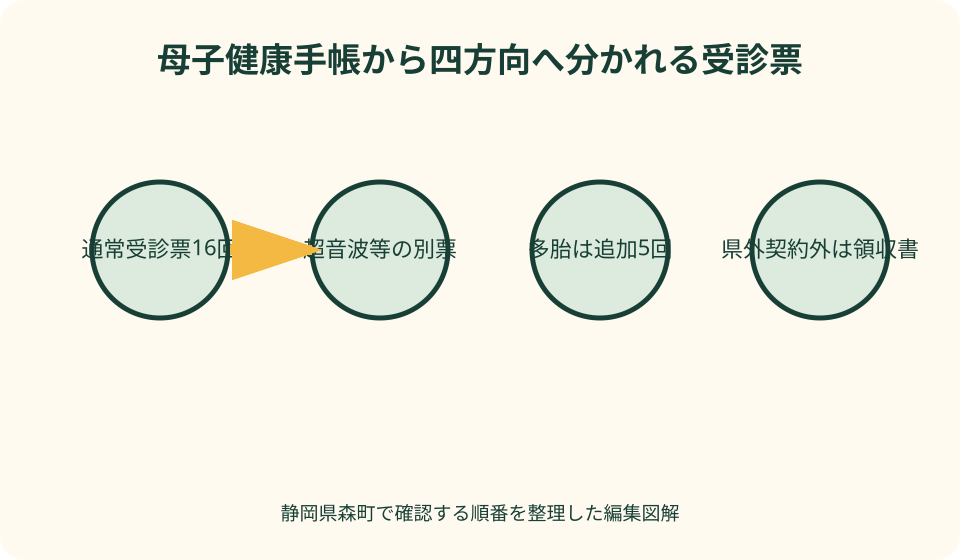
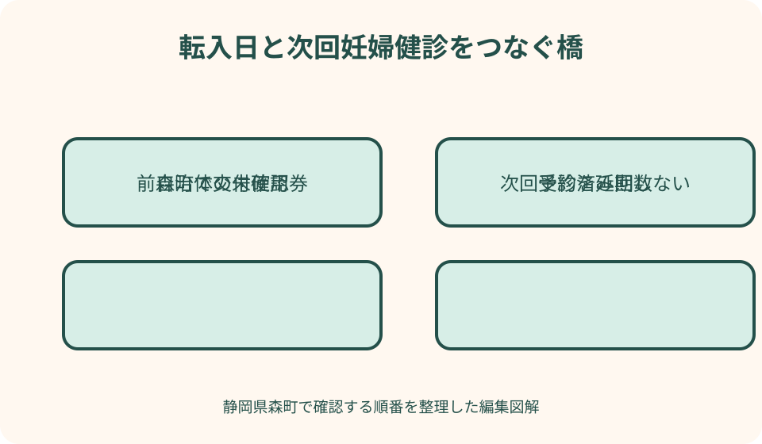

妊娠・子育て手続｜最終確認 2026-08-10
静岡県森町の妊婦健康診査｜受診票・県外受診・転入・多胎の手続
妊婦健康診査の受診票は、母子健康手帳と一緒に受け取り、指定された時期・検査に使う公費負担の書類です。森町は母子健康手帳交付時に妊婦健康診査受診票16回分と超音波検査等の受診票を渡し、多胎妊婦には追加5回分を交付しています。県外の里帰り先など、静岡県が委託契約していない医療機関では窓口で支払い、出産後に一部助成を申請する流れがあるため、受診前から領収書と未使用受診票を管理します。

編集イラスト最初に結論：住所・受診票・医療機関を一組で確認する
妊婦健康診査の手続は、受診日の住民登録、手元の受診票、受診する医療機関が委託先かを一組で確認すると迷いにくくなります。予約だけで公費負担が決まるわけではありません。
森町で母子健康手帳を受け取ったら、妊婦健康診査受診票の枚数と氏名・住所を確認します。超音波検査等の別票もあるため、冊子をばらして保管しないようにします。
受診前には、何回目の受診票を使うか、今回予定する検査、自己負担が生じる可能性を医療機関へ尋ねます。受診票があれば全費用が必ず無料になるとは限りません。
県外への里帰り、森町への転入、多胎妊娠が分かった場合は、その時点で健康こども課こども家庭係へ連絡します。受診後まで待つと、必要な原本や事前確認が不足する可能性があります。
母子健康手帳と受診票の交付
森町は、町に住民登録がある妊婦を母子健康手帳交付の対象としています。医療機関で妊娠の診断を受け、出産予定日が分かったら早めに手続します。
交付窓口は森町保健福祉センター内の健康こども課こども家庭係です。町公式は平日の午前8時30分から午後4時30分までを案内していますが、来庁日に最新情報を確認します。
持ち物には医療機関から受け取る妊娠届出書、マイナンバーが分かる物、外国籍の人は在留カードなどが示されています。支援給付を希望する場合は妊婦本人名義の口座資料も確認します。
交付時にはアンケート、面談、相談等があり、町は40分から50分程度を目安としています。体調が不安定、移動手段がない、本人が来庁しにくい場合は先に相談してください。
森町の受診票は16回分
森町公式は、母子健康手帳交付時に妊婦健康診査受診票16回分を渡すと案内しています。さらに超音波検査などの受診票も交付されます。
国の望ましい基準は、市町村が妊婦一人につき14回程度の健診費用を負担する考えを示しています。森町の16回という交付内容は、町の現行案内を基準に確認します。
回数だけで受診日を自己設定しません。森町は受診票に定められた週数内で使うよう案内しており、実際の間隔は妊娠経過と医療機関の指示によって変わります。
受診票を余らせないために無理に間隔を詰めたり、枚数がなくなったため必要な診察を控えたりしないでください。受診の必要性は医師等へ、助成の扱いは町へ確認します。
受診票を使う前の確認
各受診票には、氏名、生年月日、住所、受診週数など本人が記入する欄があります。医療機関の受付で記入漏れを指摘されないよう、鉛筆かペンかも冊子の案内で確認します。
受診票番号と妊娠週数の目安を照合し、予約時に『森町の妊婦健康診査受診票を使う』と伝えます。初めての医療機関では委託契約の取扱いも尋ねます。
母子健康手帳、受診票、本人確認や保険資格に関する物、医療機関から指定された資料をまとめます。保険診療と妊婦健診の費用は同じ扱いとは限りません。
受診票を切り離す場合は、医療機関の指示に従います。自分で順番を入れ替えると、検査項目や助成額の異なる票を誤って使うおそれがあります。
標準的な健診内容と個別の違い
国の基準では、問診・診察、体重、血圧、尿検査などの基本項目と、妊娠時期に応じた医学的検査が示されています。これは全国的な目安です。
超音波、血液検査、感染症検査などの実施時期や追加項目は、妊婦と胎児の状態、医療機関の方針、医師の判断によって異なります。
検査値をインターネットの基準表へ当てはめ、問題がない・病気であると自己判断しないでください。結果の意味と次の受診時期は担当医や助産師へ確認します。
受診票に含まれない検査や助成額を超える部分では自己負担が生じる場合があります。検査を断る・先送りする前に、必要性と費用を医療機関へ質問します。
健診の間隔は医療機関と決める
妊娠初期から出産までの標準的な受診間隔は国の資料に示されていますが、全員が同じ日程になるわけではありません。予約票と医療機関の指示を優先します。
多胎妊娠、既往歴、検査結果、体調などにより受診回数が増えることがあります。回数が多いから異常、少ないから順調と、数字だけで評価しません。
仕事や上の子の予定で指定日に受診できない場合は、次に空く日を自分で決めず、許容できる時期を医療機関へ相談します。受診票の週数条件も確認します。
大雨、道路規制、感染症などで通院が難しいときは、予約先へ連絡します。オンライン相談が可能でも、検査を伴う健診そのものを代替できるとは限りません。
多胎妊婦は追加5回分を確認する
森町は、双子などの多胎妊婦に、多胎妊婦健康診査受診票を追加で5回分交付しています。母子健康手帳交付時に多胎と分かっていれば一緒に受け取ります。
町の案内では、通常の妊婦健康診査受診票を14回使用した後、15回目から多胎用受診票を使います。どの票を先に出すかを医療機関受付で確認します。
多胎用受診票に記載された受診週数の目安より早く使用できることも町が示しています。早める必要性と実際の使用順は、医療機関と町へ確認します。
妊娠途中で多胎と分かった、転入時に多胎用の券がない、県外で追加健診を受ける場合は、未使用券の状況を伝えて健康こども課へ相談します。
里帰り・県外受診は事前に相談する
静岡県外への里帰りでも、受診先が静岡県と委託契約していれば受診票を使える可能性があります。県外という住所だけで、必ず窓口全額負担になるとは決められません。
反対に、静岡県内でも委託契約していない医療機関・助産所では、受診票をその場で使えない場合があります。予約前に医療機関と森町の双方へ確認します。
契約外の受診先では、いったん費用を支払い、出産後に森町へ一部助成を申請する流れが町ページにあります。助成額は実際の支払額全額と同じとは限りません。
里帰り先の自治体が発行する受診票を使うのではなく、住民登録のある森町の助成手続を確認します。住民票を移す場合は転出・転入の扱いへ切り替えます。

県外受診の領収書を守る
契約外医療機関で支払った場合は、妊婦健康診査と分かる領収書原本を受け取ります。森町はレシート不可と案内しているため、明細と受診者名の記載も確認します。
領収書に健診名や検査内訳がない場合は、受診当日に医療機関へ証明方法を尋ねます。後から町が必要とする記載を本人が書き足さないでください。
未使用の妊婦健康診査受診票も申請時の持ち物です。使えなかった票へ医療機関が何か記入する必要があるか、事前に森町へ確認します。
領収書は写真を撮った上で、月別封筒へ保管します。通常の妊婦健診、追加検査、保険診療、分娩費用が一枚なら、内訳書も一緒に残します。
里帰り受診後の助成申請
森町は、分娩した日の属する月から1年以内に、健康こども課こども家庭係の窓口で申請するよう案内しています。期限の数え方は出産後早めに確認します。
町が示す持ち物は、母子健康手帳、未使用受診票、領収書原本、振込口座が分かる通帳またはキャッシュカード、認印です。最新の要否を申請前に見ます。
申請対象は、里帰り出産のため静岡県が委託契約していない医療機関または助産所で受け、受診票を使えなかった健診です。ほかの県外受診事情は個別に相談します。
申請後の助成額、振込時期、提出した領収書の返却は窓口で確認します。原本提出前に家庭用の写しを取り、健診日と申請日を記録します。
森町へ転入したとき
妊娠中に森町へ転入したら、前自治体の母子健康手帳はそのまま大切に持ち、未使用の妊婦健診受診票を健康こども課へ持参して交付手続を確認します。
森町の妊婦健康診査等受診票交付申請書には、転入の区分と、所持する母子健康手帳を交付した市区町村を記す欄があります。前自治体名を控えます。
すでに受けた健診回数、使用済み・未使用の受診票、次回予約日、多胎の有無を伝えます。森町の券を何枚受け取るかを自分で残回数から決めません。
転入日と受診日が近い場合は、転入手続を待つ間の受診票の扱いを両自治体と医療機関へ相談します。必要な健診を手続のために延期しないでください。
森町から転出するとき
妊娠中に森町外へ転出する場合、森町の未使用受診票を転出先でそのまま使えると考えないでください。新住所の自治体で受診票交付の手続を確認します。
転出前に、母子健康手帳、未使用受診票、これまでの健診回数、次回予約日をまとめます。転出先窓口へ必要書類と受付時間を尋ねます。
転出日をまたいで里帰り中の場合は、どの自治体が費用を負担するかが分かりにくくなります。住民登録日と受診日を正確に伝え、双方へ確認します。
森町の未使用券を自分で廃棄せず、返却・持参の指示に従います。転出先で新しい券を受け取ったら、二種類を混在させないよう分けます。
遠方の産科医療機関への交通支援
森町は2026年度、遠方の産科医療機関等への妊産婦健診・分娩時の交通費等を一部助成する事業を案内しています。通常の受診票による健診費用助成とは別制度です。
対象には、森町に住民票があり、住所地や里帰り先から最寄りの産科医療機関等まで片道おおむね60分以上を要する場合などの条件があります。
医学上の理由で周産期母子医療センターへ通う場合の条件もありますが、医師の判断理由と最寄り施設までの移動時間を町が確認します。自己申告だけで対象と決めません。
町は申請前の相談を求めています。交通手段、距離、里帰り先、出産予定日、医療機関を伝え、領収書や利用証明をいつから残すか確認します。
受診票と交通支援を混同しない
妊婦健康診査受診票は健診費用の公費負担、遠方支援は一定条件の交通費・宿泊費に関する助成です。同じ領収書を使う場合も申請書と目的が異なります。
遠方支援の対象者でも、受診票を使える医療機関かは別に確認します。交通費の助成が認められることから、健診の自己負担も全額助成されるとは限りません。
自家用車、公共交通、タクシー、宿泊で求められる証明が違う場合があります。町ページの申請書と持ち物を確認し、申請前相談の回答を記録します。
分娩時と妊婦健診時、産婦健診時でも回数や対象経路が異なります。家族の交通記録は目的別に分け、受診日と領収書を結びます。

自己負担が出たときの確認
受診票を提出しても費用が発生したら、今回の検査内容、受診票の公費負担額、追加項目、保険診療の有無を会計窓口へ確認します。
金額が想定より高いことだけで誤請求と判断しません。医療上必要な追加検査や、券に含まれない項目がある可能性を説明してもらいます。
領収書と診療明細は出産後の助成、医療費控除、保険給付の確認に使う可能性があります。受診票が使えた回も、年別に保管します。
支払いが難しい場合は、検査を受けずに帰る前に医療機関と森町へ相談します。費用相談と医療上の受診判断は別々に扱います。
健診結果と母子健康手帳の記録
妊婦健診の結果は母子健康手帳へ記録され、妊娠・出産・産後の経過をつなぐ資料になります。受診後に記載漏れがないかを確認します。
検査結果用紙や紹介状が別に交付された場合は、手帳と一緒に保管します。写真を家族へ送る場合は診療情報が含まれることを意識します。
体重、血圧、尿検査などの数値を前年や他人と比較して自己診断しません。妊娠週数と個別状況を踏まえた説明を医師・助産師から受けます。
次回予約、注意された症状、連絡先を受診日のうちにメモします。『異常なし』という記憶だけで、次の健診を省略しないでください。
体調変化があるときは健診日を待たない
出血、強い腹痛、破水が疑われる、胎動の変化、激しい頭痛など心配な症状があるときは、次の定期健診日まで待たず受診先へ連絡します。
どの症状が緊急かは妊娠週数や本人の状態で異なり、この記事では判断できません。医療機関から夜間・休日の連絡方法を事前に聞いておきます。
受診票が手元にない、県外にいる、予約日ではないことを理由に連絡を遅らせないでください。緊急受診の費用と受診票の扱いは後で町へ確認できます。
家族は症状を軽いと決めず、発症時刻、出血等の状況、妊娠週数、受診先、移動手段を確認します。必要なら119番など適切な手段を使います。
妊婦訪問と相談窓口を使う
森町は、妊婦本人の希望や妊娠経過に応じ、保健師・助産師の訪問を案内しています。電話や窓口での相談も健康こども課こども家庭係が受け付けます。
訪問は医療機関の妊婦健診を置き換えるものではありません。通院、食事、生活、出産準備、家族支援など、日常の困りごとを相談する機会として使います。
森町こども家庭センターは妊産婦と子育て世帯への一体的な相談窓口です。制度名が分からない段階でも、受診票、里帰り、移動、産後支援をまとめて相談できます。
本人が電話をしにくい場合は、家族が同席できるかを確認します。本人の診療情報をどこまで共有するかは、本人の希望を基に決めます。
働いている妊婦の健診予定
働いている人は、次回受診日が決まったら勤務先の休暇・時間調整を早めに確認します。標準的な間隔より受診回数が増える可能性も予定に入れます。
医師等から勤務時間の短縮、休憩、通勤緩和などの指導を受けた場合は、母性健康管理指導事項連絡カードなどを使う方法があります。
カードに何を書いてもらうかは、本人が決めるのではなく医師等の指導に基づきます。勤務先へ提出する情報範囲と社内窓口を確認します。
健診のための時間確保と、体調に応じた就業上の配慮は同じ手続とは限りません。職場の規程と厚生労働省の母性健康管理情報を照合します。
家族と受診予定を共有する
家族用カレンダーには、妊娠週数、予約日、医療機関、使用予定の受診票番号、送迎担当だけを書きます。検査結果の詳細を全員へ公開する必要はありません。
上の子の預け先、天方・三倉などからの移動時間、悪天候時の代案を受診日前に決めます。本人の体調に応じて当日変更できる余地を残します。
家族が受付を手伝う場合も、診察内容や検査選択は本人と医療者が相談します。本人の前で説明を遮ったり、結果を家族だけで受け取ったりしないようにします。
領収書、未使用受診票、母子健康手帳の保管場所は、本人と支援する家族の一人が分かるようにします。多くの人へ画像共有する必要はありません。
妊婦健康診査の良い点
良い点は、定期的に母体と胎児の状態を確認し、その時期に必要な検査や生活相談へつなげられることです。自覚症状の有無だけで受診時期を決めずに済みます。
森町では16回分と超音波検査等の受診票が交付され、経済的負担を軽くする仕組みがあります。多胎妊婦には追加5回分という地域支援もあります。
里帰り先の契約外医療機関でも、条件を満たす健診費用の一部助成を申請できる道があります。事前相談と領収書保管で選択肢を残せます。
母子健康手帳へ経過を記録することで、転院、転入、出産、産後健診へ情報をつなげられます。受診票だけでなく結果記録を残す意義があります。
森町の案内に注文したい点
注文したい点は、森町の母子健康手帳ページと健診・訪問ページが分かれており、初めての人が受診票交付から県外助成まで一画面で追いにくいことです。
受診票16回分の内訳、超音波等の別票、自己負担が生じる例を一覧にすると、医療機関の会計で『無料だと思っていた』という混乱を減らせます。
転入時の交付申請書は公開されていますが、持ち物、前自治体券の扱い、交付までの時間を本文でも示すと、次回健診が近い人が動きやすくなります。
里帰り助成の『分娩した日の属する月から1年以内』という期限は、具体例を添えると誤解が減ります。県外受診前のチェックリストも掲載してほしいところです。
受診票がない・使えない場合の代案・結論
受診票を紛失した場合は、次の予約前に健康こども課へ連絡し、再交付の可否と必要書類を確認します。コピーや家族の余った券を使わないでください。
契約外医療機関で券を使えない場合は、窓口で費用を支払い、町の助成申請に必要な領収書・明細・未使用券を保管します。事前相談の回答も残します。
転入直後で森町の券がない場合は、前自治体券、母子健康手帳、次回予約日を持って町へ相談します。手続が間に合わなくても必要な受診を自己判断で中止しません。
結論として、住民登録、受診先の契約、受診票番号、妊娠週数を受診前に確認し、県外・転入・多胎では早めに町へ連絡します。医療上の予定は担当医の指示を優先します。
大石の視点：券の枚数より移動を設計する
大石の視点では、妊婦健診の準備は券を数えるだけでは足りません。森町北部からの移動、上の子の預け先、悪天候、帰宅後の休息まで一つの予定として考えます。
片道時間が長い家庭は、2026年度に始まった遠方交通支援の事前相談を早めに行う価値があります。対象になると決めつけず、距離と時間を事実で伝えます。
家族ができる最も実用的な支援は、結果を評価することではなく、受診票を忘れない、領収書を守る、送迎を確保する、緊急連絡先を持つことです。
転入や里帰りで二つの自治体が関わる時こそ、電話した日、担当窓口、回答、次の受診日を一枚にします。制度の境目で必要な健診が途切れないことを最優先にします。
二つの固有図解で手続を確認する
一つ目の図解は『母子健康手帳から四方向へ分かれる受診票』です。通常16回、超音波等、多胎追加5回、県外契約外の償還申請を色分けし、使う前の確認先を示します。
二つ目は『転入日と健診日の橋渡し』です。前自治体の使用済み・未使用券、母子健康手帳、森町の交付申請、次回予約を時系列でつなぎます。
図には検査値の正常・異常を示す判定表を置きません。健診結果は医療機関へ、費用と券は森町へという役割分担を中央に示します。
印刷した図の余白へ、次回予約、使用予定券、里帰り先、町への確認日を手書きできます。診療情報の詳細は母子健康手帳等で安全に保管します。
一次情報の読み分け
森町の『妊娠・出産』ページは、母子健康手帳の対象、交付日時・場所、持ち物、申請様式を確認する入口です。健診の券数は健診・訪問ページで確認します。
森町の『妊娠したら（健診・訪問について）』は、16回分、多胎追加5回、里帰り時の助成期限と持ち物、妊婦訪問を示す中心資料です。
遠方交通支援ページは、2026年度の距離・時間条件、事前相談、交通費・宿泊費の申請資料を確認する別制度の資料です。受診票助成と混同しません。
厚生労働省の望ましい基準は、14回程度の公費負担、標準的な検査と里帰りへの配慮を示します。森町の具体的な16回交付と個人の受診時期は町・医療機関の案内を優先します。
まとめ：交付・受診・例外手続の三段階
交付では、妊娠届出書等を持って森町で母子健康手帳と妊婦健診受診票16回分、超音波等の券を受け取ります。多胎妊婦は追加5回分を確認します。
受診では、妊娠週数と券番号を確認し、母子健康手帳と一緒に医療機関へ提出します。追加検査、自己負担、次回日程はその場で説明を受けます。
例外手続では、県外・里帰り、転入・転出、契約外医療機関、遠方交通支援を事前に森町へ相談します。領収書原本と未使用券を失わないようにします。
本稿は2026年8月10日時点の一次情報に基づき、個別の受診時期や健康状態を判断するものではありません。体調変化は健診日を待たず医療機関へ相談してください。
公式情報・確認先
掲載内容は次の一次情報を基礎に整理しました。営業、料金、催し、交通は変わるため、出発前または手続き前にリンク先で最新情報を確認してください。
- 妊娠したら（健診・訪問について）（静岡県森町、2026-08-10確認）
- 妊娠・出産（静岡県森町、2026-08-10確認）
- 妊婦健康診査等受診票交付申請書（静岡県森町、2026-08-10確認）
- 妊産婦に対する遠方の産科医療機関等への交通費等支援事業（静岡県森町、2026-08-10確認）
- 森町こども家庭センターをご利用ください（静岡県森町、2026-08-10確認）
- 妊婦に対する健康診査についての望ましい基準（厚生労働省、2026-08-10確認）
- 妊婦健康診査で実施する標準的な検査項目（厚生労働省、2026-08-10確認）
- 妊産婦健診（厚生労働省 働く女性の心とからだの応援サイト、2026-08-10確認）